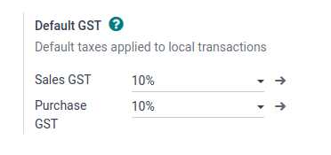
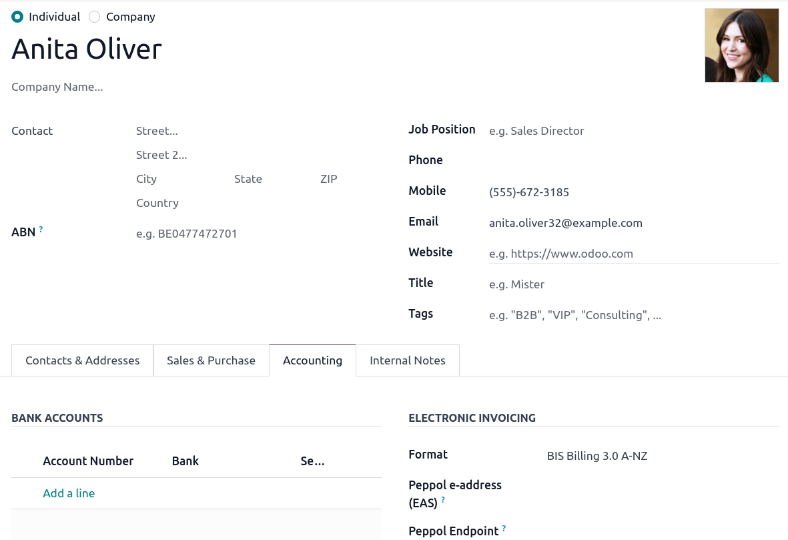
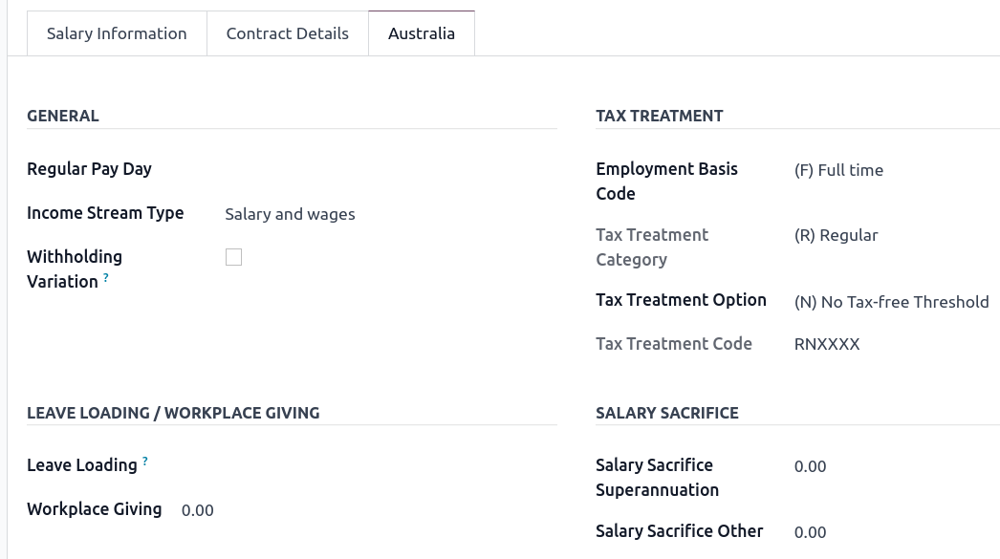
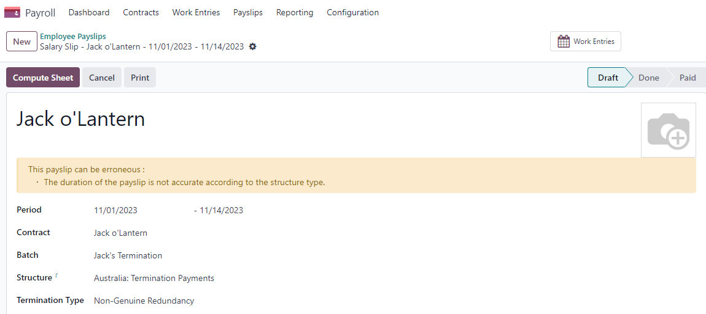

ออสเตรเลีย¶
การกำหนดค่า¶
ชื่อโมดูล |
คีย์โมดูล |
คำแนะนำ |
|---|---|---|
:guilabel:` ออสเตรเลีย - บัญชี ` |
|
การติดตั้งเริ่มต้นเมื่อบัญชี: guilabel:` การแปลทางการเงินแพคเกจการตั้งค่าเป็น: guilabel: "ออสเตรเลีย". โมดูลนี้ยังถูกติดตั้ง: guilabel: "ABA Credit Transfer" และ: guilabel: "ABA Credit Transfer"โมดูล |
: guilabel: รายงานออสเตรเลีย - การบัญชี |
`l10n_au_รายงาน ` |
รวม: guilabel: "รายงานประจำปีที่ต้องเสียภาษี (TPAR)" และ: guilabel: "รายงาน BAS" |
:guilabel:` ออสเตรเลีย - สลิปเงินเดือน |
`l10n_au_hr _ สลิปเงินเดือน ` |
การแปลเงินเดือนของออสเตรเลีย |
:guilabel:` ออสเตรเลีย - บัญชีเงินเดือน |
|
ติดตั้งลิงก์ระหว่างสลิปเงินเดือนและบัญชีในออสเตรเลีย โมดูลนี้ยังโมดูลการติดตั้ง: guilabel: "ออสเตรเลีย - บัญชี";: guilabel: รายงานออสเตรเลีย - การบัญชี และ: Gillerber: `ออสเตรเลีย -สลิปเงินเดือน |
:guilabel:`บัญชีงบลูกค้า |
`l10n _ บัญชี _ ลูกค้า _ บัญชี ` |
อนุญาตให้จัดการและส่งจากบัญชีแยกประเภทและแบบฟอร์มติดต่อของพันธมิตร ใช้ในนิวซีแลนด์เช่นกัน |
:guilabel:`ออสเตรเลียจ้างฮีโร่เงินเดือน |
|
ซิงค์บัญชีเงินเดือนทั้งหมดของ Employment Hero กับรายการบันทึกของ Odoo |
รายการบัญชี¶
รายการบัญชีออสเตรเลียรวมอยู่ใน ** ออสเตรเลีย -บัญชี ** โมดูล ไปที่: ส่วนเมนู: `การบัญชี -> การกำหนดค่า ->เข้าถึงรายการบัญชี
See also
：doc:`/ การบัญชี / การเริ่มต้น / แผนภูมิบัญชี
ภาษีอากรและภาษีสินค้าและบริการ¶
ผลกระทบด้านภาษีเริ่มต้นของออสเตรเลีย: อ้าง:รายงาน BAS <australy/BAS>,เข้าถึงได้โดย: เมนู: `บัญชี -> รายงาน ->รายงาน BAS
ในออสเตรเลียภาษีสินค้าและบริการ (GST) มีอัตราภาษีมาตรฐาน 10% แต่มีอัตราภาษีและข้อยกเว้นที่แตกต่างกันสำหรับสินค้าบางประเภทการบริการ
แผนที่ภาษี¶
ในโปรแกรมแปลภาษาของออสเตรเลียชื่อประเภทภาษีรวมถึงอัตราภาษีเป็นส่วนประกอบของข้อกำหนดในการตั้งชื่อ
แม้ว่าภาษีของโอโดจะสูง แต่ภาษีเหล่านี้มีความคล้ายคลึงกันมาก(ส่วนใหญ่ 0% และ 10%) การเปลี่ยนแปลงตารางภาษีที่แตกต่างกันเหมาะสำหรับ:
สินค้า
บริการ
TPAR
TPAR ไม่มี ABN
See also
:doc:`ภาษีและค่าธรรมเนียม</ บัญชี / ภาษี > `
ภาษีรวมถึง TPAR ไม่เพียงกล่าวถึงผลกระทบของ ** BAS** รายงานและ TPAR รายงาน ธุรกิจในบางอุตสาหกรรมจำเป็นต้องรายงานการจ่ายเงินจากบริการที่เกี่ยวข้องกับผู้รับเหมาช่วงระหว่างการเงินปี Odoo รวมภาษีและสถานะทางการเงินเพื่อรายงานเหล่านี้** การชำระเงินตามรายงาน TPAR ** รวมภาษีมูลค่าเพิ่มแล้ว ** TPAR ไม่รวม ABN สำหรับบันทึกจำนวนเงินที่ถูกอายัดจากผู้รับเหมาช่วงโดยไม่มี **ABN****สำนักงานสรรพากรออสเตรเลีย
See also
TPAR
นี่คือภาษีของออสเตรเลียในโอโด17
ชื่อภาษีสินค้าและบริการ |
คำแนะนำ |
ช่วงภาษีสินค้าและบริการ |
ประเภท GST |
|---|---|---|---|
10% |
การซื้อภาษีสรรพสามิต |
ซื้อ |
|
10% บริษัท |
ซื้อกับ GST |
ซื้อ |
|
10%C |
การซื้อเงินทุน |
ซื้อ |
|
0%C |
กระเป๋าเงิน Zero Rating |
ซื้อ |
|
กำไรก่อนหักภาษี 100% |
ซื้อ (นำเข้าที่ต้องเสียภาษี) - เสียภาษีแยกต่างหาก |
ซื้อ |
|
10%I |
ภาษีขาเข้า การขายและการจัดซื้อ |
ซื้อ |
|
10%P |
ใช้เอกชน หรือซื้อที่หักลดหย่อนไม่ได้ |
ซื้อ |
|
100%EX |
การจัดเก็บภาษีสินค้าและบริการเฉพาะสินค้านำเข้า |
ซื้อ |
|
10% ปรับ |
การปรับภาษี (ซื้อ) |
ซื้อ |
|
10% |
การขายภาษีสินค้าและบริการ |
ยอดขาย |
|
10% บริษัท |
การขายที่มี GST |
ยอดขาย |
|
0% ก่อน |
ยอดขายเป็นศูนย์ (ส่งออก) |
ยอดขาย |
|
ลดหย่อนภาษี 0% |
การขายสินค้าปลอดภาษี |
ยอดขาย |
|
0%I |
ยอดขายภาษีขาเข้า |
ยอดขาย |
|
10% ปรับ |
การปรับภาษี (การขาย) |
ยอดขาย |
|
10% ตัน / ปี |
การซื้อภาษีสรรพสามิต |
บริการ |
ซื้อ |
10% TPAR ไม่มีความผิดปกติ |
การซื้อภาษีสรรพสามิต |
บริการ |
ซื้อ |
10% รวมภาษี |
ซื้อกับ GST |
บริการ |
ซื้อ |
10% ของทุนจดทะเบียน |
ซื้อกับ GST |
บริการ |
ซื้อ |
คาร์บอน 10% / ตัน / ปี |
การซื้อเงินทุน |
บริการ |
ซื้อ |
เงินสด 10% |
การซื้อเงินทุน |
บริการ |
ซื้อ |
0%C TPAR |
ศูนย์คะแนน Wallet TPAR |
บริการ |
ซื้อ |
เงินสด 0% |
ศูนย์คะแนน Wallet TPAR ไม่มี ABN |
บริการ |
ซื้อ |
100% ตัน / ตัน |
ซื้อ (นำเข้าที่ต้องเสียภาษี) - เสียภาษีแยกต่างหาก |
บริการ |
ซื้อ |
กำไรก่อนหักภาษี 100% |
ซื้อ (นำเข้าที่ต้องเสียภาษี) - เสียภาษีแยกต่างหาก |
บริการ |
ซื้อ |
10%I TPAR |
ภาษีขาเข้า การขายและการจัดซื้อ |
บริการ |
ซื้อ |
100% ไม่ใช่เงินสด |
ภาษีขาเข้า การขายและการจัดซื้อ |
บริการ |
ซื้อ |
10% ตัน / ปี |
ใช้เอกชน หรือซื้อที่หักลดหย่อนไม่ได้ |
บริการ |
ซื้อ |
10% กำไรก่อนหักภาษี |
ใช้เอกชน หรือซื้อที่หักลดหย่อนไม่ได้ |
บริการ |
ซื้อ |
ก่อนภาษี 100% |
การจัดเก็บภาษีสินค้าและบริการเฉพาะสินค้านำเข้า |
บริการ |
ซื้อ |
ราคายังไม่รวมภาษี |
การจัดเก็บภาษีสินค้าและบริการเฉพาะสินค้านำเข้า |
บริการ |
ซื้อ |
10% หลังจากปรับ TPAR |
การปรับภาษี (ซื้อ) |
บริการ |
ซื้อ |
10% ปรับ TPAR N ABN |
การปรับภาษี (ซื้อ) |
บริการ |
ซื้อ |
47%WH |
หักภาษี ณ ที่จ่ายของหุ้นส่วนที่ไม่ได้ถือ ABN |
บริการ |
ซื้อ |
รายงาน BAS¶
** งบกิจกรรมทางธุรกิจ (BAS) ** รายงานเป็นรายงานภาษีที่สำคัญลงทะเบียน** ข้อกำหนดเกี่ยวกับภาษีสินค้าและบริการ (GST)**ในออสเตรเลีย ** BAS ** ใช้สำหรับจัดส่งไปยัง**สำนักงานสรรพากรออสเตรเลีย (ATO) ** ด้วยคุณสมบัติ Odoo ** BAS **ธุรกิจสามารถรายงานได้ดังนี้
ภาษีสินค้าและบริการ (GST)
ภาษีเงินได้หัก ณ ที่จ่าย

ภาษีสินค้าและบริการจะถูกเรียกเก็บจาก ** Tax Grid ** ซึ่งอยู่ใน -กำหนดค่าในระบบ ** ตารางภาษี ** สามารถตั้งค่าได้ด้วยตนเองภาษีสรรพสามิตพิเศษใด ๆ เพิ่มเติม เมื่อตั้งภาษีแต่ละบัญชีเรียบร้อยแล้วระบบจะจัดรายการบันทึกประจำวันให้อยู่ในหมวดภาษีที่ถูกต้องโดยอัตโนมัติ นี่ตรวจสอบให้แน่ใจว่า **BAS ** รายงานถูกต้องและสะท้อนให้เห็นถึงธุรกิจของคุณกิจกรรมทางการเงิน

นอกจากนี้ BAS รายงานยังรวมถึง ** จ่ายตามที่จ่ายไป** หักภาษี ณ ที่จ่ายส่วนประกอบ (** W1 ** ถึง ** W5 * แล้ว ** สรุปส่วน 4 **) การบูรณาการครั้งนี้ตรวจสอบให้แน่ใจว่ามีการบันทึกภาษีหัก ณ ที่จ่ายที่เกี่ยวข้องกับเงินเดือนอย่างถูกต้องและสะท้อนออกมาในรายงาน

โมดูลนี้มีกฎในตัวเพื่ออำนวยความสะดวกโดยอัตโนมัติ**W1** ถึง W5 การคำนวณภาษี เจาะรายละเอียดโปรดให้ข้อมูลเพิ่มเติมเกี่ยวกับกระบวนการคำนวณภาษีเหล่านี้โปรดดูเอกสารแอปพลิเคชันสลิปเงินเดือน
See also
:ref:` เงินเดือน <ออสเตรเลีย/สลิปเงินเดือน>`
ปิดรายงาน BAS¶
เมื่อจำเป็นต้องยื่นแบบแสดงรายการภาษีกับ ATO คลิก: guilabel: 'end input' สามารถกำหนดระยะเวลาการคืนภาษีได้:menusesection:` การกำหนดค่า -> การตั้งค่า -> รอบการคืนภาษีนอกจากนี้วันที่เริ่มต้นของระยะเวลาการคืนภาษีสามารถกำหนดได้โดย** ปุ่มระยะเวลา ** (ทำเครื่องหมายด้วยไอคอนปฏิทิน 📅).
See also
:doc:` บทสรุปสิ้นปี </ บัญชี/รายงาน/ปี_end>`
Note
Odoo ใช้ Calendar Quarter แทนที่จะเป็น Australian Quarterนั่นหมายความว่า เดือนกรกฎาคม-กันยายน เป็นไตรมาสที่ 3 ของโอโด้
** ภาษีสินค้าและบริการจะต้องชำระก่อนปิดรายการครั้งแรกต้องตั้งบัญชี** และ ** ลูกหนี้ภาษีสินค้าและบริการ** การแจ้งเตือนป๊อปอัพขึ้นและเปลี่ยนเส้นทางผู้ใช้ไปยังการกำหนดค่ากลุ่มภาษี
เมื่อมีการจัดตั้งบัญชี ** เจ้าหนี้ภาษีสินค้าและบริการ** และ ** ลูกหนี้**** BAS ** รายงานสร้างรายการตรวจสอบบันทึกประจำวันที่ถูกต้องโดยอัตโนมัติบัญชีนี้จะสมดุลยอดคงเหลือ GST กับบัญชีหักบัญชี GST

** ยอดคงเหลือระหว่างภาษีสินค้าและบริการที่เรียกเก็บ** และ ** ที่ต้องชำระ** และบัญชีชำระภาษีที่กำหนดไว้ในกลุ่มภาษี จำนวนเงินที่ต้องชำระ หรือข้อมูลที่ได้รับจาก Australian Tax Agency สามารถเช็คยอดบัญชีกับธนาคารได้
Important
**BAS ** รายงานไม่ได้ส่งโดยตรงไปยัง ** ATO ** Odo ช่วยคุณคำนวณค่าที่จำเป็นในแต่ละส่วนโดยอัตโนมัติความเป็นไปได้ในการตรวจสอบพวกเขาเพื่อให้เข้าใจประวัติศาสตร์ที่อยู่เบื้องหลังเหล่านี้ได้ดีขึ้นตัวเลข องค์กรสามารถคัดลอกค่าเหล่านี้และใส่ลงใน "ATO"พอร์ทัลไซต์ < https://www.ato.gov.au/newsrooms/small-business-newsroom/lodging-แบสคนต่อไปของเธอ
รายงาน TPAR¶
Odoo อนุญาตให้ธุรกิจรายงานการชำระเงินให้กับผู้รับเหมาหรือผู้รับเหมาช่วงในปีงบประมาณนี้ นี่คือการสร้าง: ชื่อย่อ: "TPAR (รายงานประจำปีที่ต้องเสียภาษี)" หากคุณไม่แน่ใจว่าของคุณธุรกิจต้องการรายงานนี้ โปรดดูเอกสารที่จัดทำโดย "ATO"< https://www.ato.gov.au/businesses-and-organisations/preparing-lodging-and-การชำระเงิน / การรายงานและการคืนภาษี / รายงานประจำปีที่ต้องเสียภาษี > `_ คุณสามารถหารายงานนี้อยู่ใน: ส่วนเมนู: `การบัญชี -> รายงาน -> ภาษีที่ต้องชำระรายงานประจำปี (TPAR)
การกำหนดค่า¶
ใน: เมนู: "บัญชี -> ลูกค้า" หรือ:menusesection:`accounting -->supplier', เลือกผู้รับเหมาและตั้งค่า: guilabel: สถานะทางการเงินภายใต้แท็บ "การขายและการจัดซื้อ"

เมื่อมีการเรียกเก็บเงินไปยังผู้ติดต่อที่กำหนดสถานะทางการเงินเป็นค่าต่อไปนี้: guilabel: "TPAR" หรือ:guilabel:` TPAR โดยไม่ต้อง ABN รายงานจะถูกสร้างขึ้นโดยอัตโนมัติใน:menusesection:` การบัญชี -> รายงาน -> รายงานประจำปีที่ต้องเสียภาษี（TPAR）。
ราคานี้รวมภาษีมูลค่าเพิ่ม ** ABN ** ภาษีมูลค่าเพิ่ม ** ภาษีมูลค่าเพิ่ม ** ภาษีมูลค่าเพิ่ม กักตัวไว้กับผู้รับเหมาช่วง**TPAR
** ยอดรวมที่ชำระแล้ว**: แสดงเป็นกรณีหลังจากชำระค่าบริการแล้ว
**ภาษีเงินได้หัก ณ ที่จ่าย **: กรณีผู้รับเหมาช่วงได้จดทะเบียนกับกรมธนารักษ์แล้วโพสต์ตั้งค่าเป็น: guilabel:` TPAR โดยไม่ต้อง ABN
** TPAR ** รายงานสามารถส่งออกเป็นรูปแบบ PDF, XLSX และ TPAR
คำชี้แจงของลูกค้า¶
ใบแจ้งยอดบัญชีลูกค้าช่วยให้ลูกค้าสามารถดูธุรกรรมทางการเงินได้กรณีที่บริษัทเกินระยะเวลาที่กำหนด และรายละเอียดงบล่าช้า เหล่านี้สามารถส่งบิลให้ลูกค้าได้ทางอีเมล

ลูกค้าสามารถดาวน์โหลดงบเหล่านี้ได้ 2 วิธี **
** ในแบบฟอร์มการติดต่อ: ** คำชี้แจงของลูกค้ามีดังนี้:menusesection:` ลูกค้า -> ลูกค้า เลือกลูกค้า คลิก**ไอคอนเกียร์ ( ⚙)**, จากนั้น: guilabel: "พิมพ์ใบแจ้งยอดลูกค้า" นี่พิมพ์งบตั้งแต่ต้นเดือนจนถึงวันนี้
** จากบัญชีแยกประเภทคู่ค้า: ** ตัวเลือกนี้อนุญาตให้ใช้เลือกวันที่เริ่มต้นและสิ้นสุดของประโยค คุณสามารถเข้าถึงได้โดย:: เมนู: "บัญชี -> รายงาน -> บัญชีแยกประเภทคู่ค้า" จากนี้ไประบุช่วงวันที่ในเมนูปฏิทิน ** ( 📅)** สำหรับคำสั่งนี้ เลื่อนบนพาร์ทเนอร์คลิกที่: guilabel: แท็บ "แถลงการณ์ลูกค้า"
แจ้งการโอนเงิน¶
การแจ้งการโอนเงินเป็นเอกสารที่ใช้ในการรับรองการจ่ายเงินให้กับสถานประกอบการ InOdoo สามารถเข้าถึงได้โดย: เมนู: `Accounting_DE Supplier_DEชำระเงิน, เลือกชำระเงินและคลิก: เมนู: `Print -->ใบเสร็จรับเงิน

e-Invoice โดย Peppol¶
Odoo มีคุณสมบัติตรงตามข้อกำหนด "PEPPOL" ของออสเตรเลียและนิวซีแลนด์< https://peppol.org/learn-more/country-profiles/australia/ >`_. คุณสามารถหาและการตั้งค่าสำหรับพันธมิตรแต่ละราย** E-Invoice** การตั้งค่า: menusesection: "บัญชี -> ลูกค้า" หรือ: menusesection: "บัญชี ->"ผู้ให้บริการ" เลือกพันธมิตรและคลิก: guilabel: แท็บ "การบัญชี"
Important
ตรวจสอบใบแจ้งหนี้หรือเครดิตสลิปของพันธมิตรในเครือข่าย PEPPOLจะดาวน์โหลดไฟล์ XML ที่เข้ากันได้ซึ่งสามารถอัปโหลดด้วยตนเองไปยังของคุณเครือข่าย PEPPOL
ไฟล์ ABA สำหรับการชำระเงินจำนวนมาก¶
บทนำ¶
ไฟล์ ABA เป็นรูปแบบดิจิทัลที่พัฒนาโดย "ธนาคารออสเตรเลีย"สมาคม < https://www.ausbanking.org.au/ >`_. มันถูกออกแบบมาสำหรับธุรกิจลูกค้าอำนวยความสะดวกในการประมวลผลการชำระเงินจำนวนมากโดยการอัปโหลดไฟล์เดียวจากซอฟต์แวร์การจัดการธุรกิจของพวกเขา
ประโยชน์หลักของการใช้เอกสาร ABA คือการปรับปรุงการชำระเงินและการจับคู่ประสิทธิภาพ ทำได้โดยการรวมการชำระเงินหลายรายการเป็นหนึ่งเดียวเอกสารการประมวลผลแบทช์ที่สามารถส่งไปยังธนาคารออสเตรเลียทั้งหมด
การกำหนดค่า¶
การตั้งค่า¶
เพื่อเปิดใช้งาน ** การชำระเงินจำนวนมาก ** ไปที่: menusesection:`accounting -->การกำหนดค่า -> การตั้งค่า -> การชำระเงินเป็นกลุ่ม ' และเปิดใช้งาน: guilabel: ` อนุญาตการชำระเงินจำนวนมาก
สมุดบันทึกธนาคาร¶
จากนั้นไปที่: ส่วนเมนู: "การบัญชี -> การกำหนดค่า -> บันทึกประจำวัน"เลือก: guilabel: "ธนาคาร" ประเภทไดอารี่ ใน: guilabel:` บันทึกรายการ `ในแท็บป้อน: guilabel: "หมายเลขบัญชี" และคลิก: guilabel: "สร้างและบรรณาธิการ ในหน้าต่างป๊อปอัพให้กรอกข้อมูลต่อไปนี้:
ธนาคาร`
:guilabel:` ชื่อเจ้าของบัญชี
：guilabel:
BSBเจ้าของบัญชี

Important
: guilabel: ต้องเปิดใช้งานฟิลด์ "การโอนเงิน" **
Note
: guilabel: ช่องสกุลเงินเป็นตัวเลือก
กลับไปที่: guilabel: แท็บ "รายการบันทึกประจำวัน" และกรอกข้อมูลต่อไปนี้ฟิลด์ที่เกี่ยวข้องกับ ABA:
BSB:ฟิลด์นี้จัดรูปแบบโดยอัตโนมัติโดยบัญชีธนาคาร
: guilabel: "รหัสสถาบันการเงิน": ตัวย่อจาก 3 ตัวอักษรอย่างเป็นทางการสถาบันการเงิน (เช่น WBC ของ Western Pacific Bank)
: guilabel: "ให้ชื่อผู้ใช้": 6 หลักจากธนาคารของคุณหากคุณต้องการทราบข้อมูลเพิ่มเติม กรุณาติดต่อหรือตรวจสอบเว็บไซต์ของธนาคาร
- : guilabel: "รวมถึงการซื้อขายที่สมดุลด้วยตนเอง": การเลือกตัวเลือกนี้จะเพิ่มขึ้นพิเศษ
ธุรกรรมถูกประมวลผลไปยังส่วนท้ายของไฟล์ ABA ซึ่งบางส่วนสถาบันการเงินจำเป็นต้องใช้ในการสร้างเอกสาร ABA ด้วยของคุณธนาคารดูว่าคุณต้องการตัวเลือกนี้หรือไม่
จากนั้นไปที่หน้าเดียวกัน: guilabel: แท็บการชำระเงินขาออก: guilabel: สมุดบันทึกประเภท "ธนาคาร" คลิกที่: guilabel: "เพิ่มบรรทัด" และเลือก: guilabel: "ABA Credit Transfer" เป็นวิธีการชำระเงิน**
บัญชีธนาคารของพันธมิตร¶
ไปที่: เมนู: "บัญชี -> ลูกค้า -> ลูกค้า" หรือ:menusesection:accounting --> supplier --> supplier และเลือก partnerคุณต้องการเพิ่มข้อมูลธนาคารให้กับใคร เมื่อเลือกแล้วคลิก: guilabel: แท็บ "บัญชี" ภายใต้: guilabel: "บัญชีธนาคาร",คลิก: guilabel: เพิ่มบรรทัด 'กรอกข้อมูล:
: guilabel: "หมายเลขบัญชี" ของพันธมิตรนี้
ธนาคาร`
:guilabel:` ชื่อเจ้าของบัญชี
：guilabel:
BSB: guilabel: หัวหน้าฝ่ายบัญชี
: guilabel: "Send Money" นิยามบัญชีธนาคารว่า "เชื่อถือได้" คือสำคัญสำหรับไฟล์ ABA ต้องเปิดใช้งานหากต้องการใช้งาน
สร้างแฟ้ม ABA¶
ในการสร้างไฟล์ ** ABA ** ใช้: guilabel: "สร้าง" การเรียกเก็บเงินของผู้ขาย (ด้วยตนเองหรือจากใบสั่งซื้อ): guilabel: ยืนยันการเรียกเก็บเงินและตรวจสอบให้แน่ใจว่าผู้ขายข้อมูลธนาคารถูกตั้งค่าอย่างถูกต้องก่อนที่จะลงทะเบียนสำหรับการชำระเงิน ..
ถัดไปในหน้าต่างป๊อปอัพคลิกที่: guilabel:ลงทะเบียนการชำระเงิน': เลือก: guilabel: "ธนาคาร" ไดอารี่, เลือก: guilabel: "ABA Credit Transfer" เป็น:guilabel: วิธีการชำระเงิน'เลือกได้ถูกต้อง:guilabel:` ธนาคารผู้รับเงินบัญชี
เมื่อยืนยันการชำระเงินการชำระเงินจะปรากฏใน: menusesection:บัญชี ->ผู้ขาย -> การชำระเงิน เลือกช่องที่จะรวมอยู่ในการชำระเงินแบทช์และคลิก: guilabel: `สร้างชุด' เพื่อตรวจสอบข้อมูลทั้งหมดว่าcorrect and finally：guilabel:`Validate。 เมื่อตรวจสอบแล้วเอกสาร ABAมีให้บริการใน ** แชท ** ทางด้านขวา
หลังจากอัพโหลดไปยังพอร์ทัลธนาคาร ธนาคารธุรกรรม ABA จะปรากฏในฟีดธนาคารของคุณในการทำซ้ำฟีดธนาคารถัดไป คุณต้องตรวจสอบยอดเงินกับ Odoo Pay ** Bulk Pay **
See also
: doc:` ชำระเงินจำนวนมาก </ การบัญชี / การชำระเงิน / การประมวลผลแบทช์ > `
ซื้อตอนนี้ จ่ายทีหลัง¶
ซื้อตอนนี้การชำระเงินภายหลังเป็นวิธีการชำระเงินที่นิยมสำหรับร้านค้าอิเล็กทรอนิกส์ออสเตรเลีย บางส่วนของการแก้ปัญหาเหล่านี้สามารถได้รับผ่าน "แถบ"< https://stripe.com/en-au/payments/payment-methods >`_ และ "เอเชียเพย์"< https://www.asiapay.com.au/payment.html#option > `_ ผู้ให้บริการชำระเงิน
POS Terminal ออสเตรเลีย¶
หากคุณต้องการเชื่อมต่อโดยตรงระหว่าง Odoo และ PoS Terminal ของคุณในออสเตรเลียคุณ*ต้อง*มี**แถบ**เทอร์มินัล การสนับสนุน Odoo** EFTPOS ในออสเตรเลีย ** โซลูชั่นการชำระเงิน
Note
คุณไม่จำเป็นต้องใช้ Stripe Payment Terminal เพื่อใช้ Odoo เป็น PoS หลักของคุณระบบ ข้อเสียเปรียบเพียงอย่างเดียวของการไม่ใช้แถบคือแคชเชียร์จะต้องดำเนินการด้วยตนเองป้อนจำนวนเงินที่ชำระสุดท้ายในเทอร์มินัล
See also
: doc:` ผู้ให้บริการชำระเงิน Stripe Odoo </ การชำระเงิน _ ผู้ขาย / แถบ> `
:: doc:`Stripe Odoo Payment Terminal</ แอป / การขาย / จุดขาย / วิธีการชำระเงิน / เทอร์มินัล / แถบ>
แดชบอร์ดลาย https://dashboard.stripe.com/dashboard >`_
สลิปเงินเดือน¶
Important
ขณะนี้ Odoo ยังไม่สอดคล้องกับ STP Phase 2
พัฒนาพนักงานของคุณ¶
หากต้องการสร้าง ** แบบฟอร์มพนักงาน ** และกรอกข้อมูลที่จำเป็น โปรดไปที่** พนักงาน ** App และแตะ: guilabel:`สร้าง' ใน: guilabel:`ทรัพยากรบุคคลแท็บการตั้งค่าคุณสามารถป้อนข้อมูลที่จำเป็น:
TFN Status:หากพนักงานจัดหา TFN โปรดตรวจสอบให้แน่ใจว่าได้เพิ่มไปที่ฟิลด์ "TFN"
: guilabel: "ไม่มีถิ่นที่อยู่": หากพนักงานเป็นชาวต่างชาติ
: guilabel: "เกณฑ์การยกเว้นภาษี": หากพนักงานต่ำกว่าหรือสูงกว่าธรณีประตู
guilabel: "HELP / STSL": การสนับสนุนสินเชื่อเพื่อการศึกษาและการฝึกอบรมทุกประเภท(เช่น HELP, VSL, SSL ...)
:guilabel:` ลดหย่อนภาษีประกันสุขภาพ
: guilabel: การยกเว้นภาษีประกันสุขภาพ
: guilabel: หักเงินเดือนพิเศษ
...
การจัดการสัญญาในออสเตรเลีย¶
หลังจากสร้างแบบฟอร์มพนักงานแล้วให้แน่ใจว่าสัญญาถูกเปิดใช้งานโดยคลิก: guilabel: contract' ปุ่มสมาร์ทหรือไปที่:menusesection: พนักงาน -> พนักงาน -> สัญญา
Note
ลูกจ้างแต่ละคนสามารถเปิดใช้พร้อมกันได้เพียง 1 สัญญาเท่านั้น แต่ลูกจ้าง 1 คนสามารถจัดสรรสัญญาต่อเนื่องได้ในระหว่างการจ้างงาน
ข้อมูลเกี่ยวกับสัญญาที่เกี่ยวข้องกับออสเตรเลียสามารถดูได้จากด้านล่าง** สาม ** สถานที่ตั้ง:
ก่อนจะจัดสรรยอดเงินเดือน ความถี่ในการจ่าย และรายละเอียดสำคัญอื่นๆในสัญญาระบุ โครงสร้างเงินเดือน ** วันที่เริ่มต้น ** และ รายการงาน ** แหล่งที่มาเป็นสิ่งสำคัญ ในออสเตรเลีย a#ใช่สำหรับการกำหนดรูปแบบภาษีที่ใช้กับสัญญาดังกล่าวตามที่กำหนดไว้สำนักงานสรรพากรออสเตรเลีย (ATO) สัญญาส่วนใหญ่จะเป็นของดังต่อไปนี้**โครงสร้างสามแบบ**:
**ปกติ (ตารางที่ 1) **: พนักงานส่วนใหญ่ของออสเตรเลียจะจัดอยู่ในหมวดหมู่นี้ โครงสร้างนี้จึงมอบหมายให้ทุกคนโดยปริยายสัญญา
Working Holiday (ตารางเวลา 15) เมื่อจ้างงานวันหยุดผู้ผลิต (WHM) ภาษีอื่น ๆ สามารถใช้ได้ รายละเอียดเกี่ยวกับข้อมูลเฉพาะเหล่านี้ผลกระทบด้านภาษีโปรดดูเอกสารที่ให้ไว้โดย ATO
**ไม่มี TFN ** เลือกโครงสร้างนี้หากพนักงานไม่เสนอ**TFN**เป็นเวลากว่า 28 วัน

Important
โครงสร้าง ** ทำสวน / ตัด (ตารางที่ 2) ** และ ** ศิลปินและผู้ดำเนินการ (ตารางที่ 3) ** เสร็จสิ้นเพียงบางส่วนและมีการทดสอบที่เหมาะสมควรดำเนินการก่อนใช้จ่ายเงินเดือนให้กับลูกจ้างในการผลิตฐานข้อมูล ส่งความคิดเห็นของคุณไปที่ au-feedback@mail.odoo.com.
ฟิลด์: guilabel: "แหล่งที่มาของรายการงาน" ก็มีความสำคัญเช่นกันมันกำหนดวิธี** เวลาทำงาน ** และ ** วัน ** ถูกนับรวมอยู่ในสลิปเงินเดือนของพนักงาน
: guilabel: "ตารางการทำงาน": รายการงานจะถูกสร้างขึ้นโดยอัตโนมัติขึ้นอยู่กับตั้งแต่สัญญาจ้าง และตามตารางการทำงานของพนักงานวันที่... ยกตัวอย่างเช่น สมมติพนักงานคนหนึ่งทำงาน 38 ชั่วโมงต่อสัปดาห์โดยสัญญาของทั้งคู่จะเริ่มตั้งแต่วันที่ 1 มกราคมนี้ วันนี้ (16 ม.ค.) ผู้ใช้งานสร้างรายได้ 14-20 ม.ค.นี้ เวลาทำงานภายในสลิปเงินเดือนจะถูกคำนวณโดยอัตโนมัติเป็น 38 ชั่วโมง (5 * 7.36 ชั่วโมง)ไม่ได้ลางาน
: guilabel: "เข้าร่วม": ตารางงานเริ่มต้นถูกละเลย, ทำงานรายการจะถูกสร้างขึ้นหลังจากเข้าและออกจากแอปพลิเคชันการเข้าร่วมประชุมเท่านั้น
Planning:แผนงานเริ่มต้นถูกละเลยและทำงานรายการจะถูกสร้างขึ้นโดยกะที่วางแผนไว้เท่านั้น
Important
จำเป็นต้องมีการกำหนดค่าเพิ่มเติมเพื่อให้แน่ใจว่าสลิปเงินเดือนของ Odooการคำนวณอัตโนมัติ** อัตราโทษต่างๆ ตามที่รางวัลกำหนดไว้**(ค่าล่วงเวลา วันหยุดราชการ เป็นต้น)** ในการสร้างการกำหนดค่าเหล่านี้สร้างประเภทรายการงานใหม่สำหรับแต่ละอัตราโทษแล้วกำหนดบทลงโทษแสดงเป็นเปอร์เซ็นต์ เมื่อการกำหนดค่าครั้งเดียวนี้เสร็จสมบูรณ์รายการงานสามารถนำเข้าด้วยตนเองในแต่ละช่วงเวลา และ Odoo จะจ่ายเงินแยกต่างหากรายการและอัตราเงินเดือนของพนักงาน
Important
ตารางเวลาไม่มีผลต่อรายการงานใน Odoo
: guilabel: แท็บ "ข้อมูลเงินเดือน" ประกอบด้วยข้อมูลพื้นฐานหลายช่องมีผลต่อความถี่ในการดำเนินงานเงินเดือน และการบริหารกฎเกณฑ์สลิปเงินเดือนโอดอร์
: guilabel: "ประเภทเงินเดือน": เลือก: guilabel: "เงินเดือนประจำ" ประเภทการจ่ายเงินเต็มจำนวน -เวลาและพนักงานพาร์ทไทม์ สำหรับพนักงานชั่วคราวและอื่น ๆ: guilabel:" ชั่วโมงประเภทเงินเดือน สำหรับพนักงานที่ได้รับค่าจ้างเป็นรายชั่วโมงโปรดตรวจสอบนิยามถูกต้อง ** โหลดแบบสุ่ม **
: guilabel: "ค่าตอบแทนตามแผน": ในออสเตรเลียมีเพียงค่าตอบแทนดังต่อไปนี้ความถี่ในการรับ: ** รายวันรายสัปดาห์ทุกสองสัปดาห์ (หรือทุกสองสัปดาห์)รายเดือนและรายไตรมาส**
: guilabel: "เงินเดือน" (/ ระยะเวลา): จัดสรรเงินเดือนตามสัญญาความถี่ในการชำระเงิน ในสลิปเงินเดือนค่าจ้างประจำปีที่สอดคล้องกันและค่าจ้างรายชั่วโมงจะการคำนวณอัตโนมัติ
Note
สำหรับพนักงานรายชั่วโมงโปรดทราบว่าค่าจ้างรายชั่วโมงไม่รวมพนักงานชั่วคราวกำลังโหลด
: guilabel: แท็บ "ออสเตรเลีย" ฟิลด์ส่วนใหญ่ในแท็บนี้ใช้สำหรับ** One Touch Payroll Slip ** (หรือ ** STP ) รายงานซึ่งต้องใช้อย่างละเอียดทราบรายละเอียดหลายอย่างในสัญญาจ้างพนักงาน ดูตรวจสอบข้อมูลในแท็บนี้ก่อนดำเนินการชำระเงิน ซึ่งรวมถึงดังต่อไปนี้ 4 ฟิลด์** มีผลต่อการคำนวณสลิปเงินเดือน:
: guilabel: "การเปลี่ยนแปลงการพักงาน": ใช้ช่องนี้หากพนักงานมีกรณีดังต่อไปนี้ภาษีหัก ณ ที่จ่ายจะต้องเปลี่ยนขึ้นหรือลงตามจำนวนเงินสถานการณ์ ตัวอย่างเช่น หากพนักงานเอ็กซ์ได้รับประโยชน์จากการหักภาษี ณ ที่จ่าย 25%หากมีการเปลี่ยนแปลงเปอร์เซ็นต์ภาษีที่พวกเขาหักจะแตกต่างกันไปตามจำนวนเงินพวกเขาควรจ่ายเงินเดือนตามโครงสร้างเงินเดือนและสถานการณ์ของตนเองคงที่ที่ 25%
: guilabel: "Leave Loading": หากพนักงานเพลิดเพลินกับวันหยุดประจำโหลดค่าที่ตั้งในฟิลด์: guilabel: "Leave Loading Rate" (เช่น17.5%) คิดตามจำนวนเงินที่ได้รับในแต่ละปี หรือเมื่อใช้บริการระยะยาวใบไม้
:guilabel:`เงินเดือนเสียสละเงินบำนาญ':เพิ่มจำนวนฟิลด์นี้หักจากเงินเดือนพื้นฐานของพนักงานตามความถี่ที่จ่ายการคำนวณเงินเดือนทั้งหมด จากนั้นเพิ่มเงินจำนวนนี้ไปยังซุปเปอร์สายการรับประกันสลิปเงินเดือนของพวกเขา ตัวอย่างเช่น หากพนักงานวายมีรายได้ 5000 ดอลลาร์ออสเตรเลียต่อชั่วโมงเสียสละ $ 300 ต่อเดือนเป็นเงินบำนาญชราภาพและเงินเดือนทั้งหมดของพวกเขาจะเป็น$ 4,700 และ $ 300 จะเพิ่มขึ้นใน superbase ปกติการบริจาค
: guilabel: `เงินเดือนเสียสละอื่น ๆ': จำนวนเงินที่เพิ่มเข้ามาในฟิลด์นี้คือหักจากเงินเดือนพื้นฐานของพนักงานตามความถี่ในการจ่ายการคำนวณเงินเดือนทั้งหมด
เมื่อใส่ข้อมูลสำคัญครบถ้วนแล้วให้แน่ใจว่าสถานะของสัญญาจาก #toเพื่ออำนวยความสะดวกให้กับประชาชนขณะที่การขึ้นค่าแรง
การจัดสรรบัญชีเงินบำนาญชราภาพ¶
หลังจากได้รับรายละเอียดเรื่องเงินบำนาญของพนักงานใหม่แล้วมั่นใจว่าสร้างบัญชีใหม่ใน: menusesection: `Payroll-> การกำหนดค่า ->ซุปเปอร์แอคเคาท์ เชื่อมโยงไปถึงพนักงาน อินพุต: guilabel:`superกองทุน,: guilabel: "สมาชิกเริ่ม" วันที่ และ: guilabel: "TFN" หมายเลขลูกจ้าง
สมมติว่ากองทุนบำเหน็จบำนาญที่ลูกจ้างใช้ไม่มีอยู่ฐานข้อมูลยังไม่มี ในกรณีนี้ Odoo ได้สร้างสรรค์สิ่งใหม่และรวมศูนย์พื้นฐานเข้าด้วยกันข้อมูลเกี่ยวกับกองทุน เช่น ABN, ที่อยู่, ประเภท(APRA หรือ SMSF), USI และ ESA สามารถสร้างกองทุนซุปเปอร์ฟันด์ หรือนำเข้าไปที่: menusesection:` payment slip -> configuration -> super fund
Important
ขณะนี้โอดูยังไม่ผ่านเกณฑ์ SuperStream **
สร้างแถบเงินเดือนโดยใช้สลิปเงินเดือน¶
Odoo สามารถสร้าง Payment Run ได้ด้วย ** 2 วิธี คือ ผ่าน ** Batch ** หรือ ผ่าน**บุคคลธรรมดา **สลิปเงินเดือน
สร้างสลิปเงินเดือน¶
เมื่อเตรียมจัดทำร่างสลิปเงินเดือนพนักงาน (เช่น ในรายสัปดาห์, สองสัปดาห์หรือรายเดือน), นำทางไปที่: menusesection:` สลิปเงินเดือน -->สลิปเงินเดือน -> ล็อต และคลิก: guilabel: "ใหม่". กรอกข้อมูลที่จำเป็นคลิก: guilabel: `สร้าง Payroll Slip', เลือก: guilabel: `เงินเดือนโครงสร้าง,: guilabel: "แผนก",: guilabel: "พนักงาน" และ: guilabel: "สร้าง" วิธีนี้ทำให้สามารถสร้างสลิปเงินเดือนได้หลายแบบสอดคล้องกับพนักงานทุกคนในชุดเดียว
ตั้งชื่อให้ล็อตนี้ (เช่น "2024 – W1 รายสัปดาห์")
เลือกวันเริ่มต้นและสิ้นสุดการทำงานของเงินเดือน (เช่น 1 มกราคม 2567 - 1 กรกฎาคม 2567)
ฮิต: guilabel: "สร้าง". หน้าต่างป๊อปอัพต้องการการยืนยันควรบรรจุลูกจ้างไว้ในลอตนี้ โดยปริยายพนักงานทุกคนที่ทำงานอยู่รวมอยู่ด้วย คุณสามารถปล่อยให้ฟิลด์ guilabel: "โครงสร้างเงินเดือน" เป็นโอดูว่างเปล่าเลือกโครงสร้างของสัญญาที่เชื่อมโยงกับพนักงานแต่ละคนโดยอัตโนมัติ
ลอตนี้สร้างสลิปเงินเดือนได้มากเท่ากับจำนวนพนักงาน ไม่มีข้อจำกัดจำนวนสลิปเงินเดือนที่สร้างขึ้นเป็นกลุ่ม
ตรวจสอบข้อมูลสำคัญในสลิปเงินเดือนแต่ละใบ หลังจากสลิปเงินเดือนในล็อตหากสร้างแล้วไม่จำเป็นต้องคำนวณเงินเดือนบรรทัดเดียวด้วยตนเองโอโดทำเพื่อคุณ
การสร้างสลิปเงินเดือนส่วนบุคคล¶
หากเงินเดือนไม่ได้อยู่ในหมวดปกติในสลิปเงินเดือน คุณสามารถเลือกที่จะสร้าง Payroll Run สำหรับพนักงานแต่ละคนโดยเฉพาะลูกจ้าง ไปที่: เมนู: "สลิปเงินเดือน" -> "สลิปเงินเดือน -> สลิปเงินเดือนทั้งหมด" และคลิก:guilabel:`ใหม่' การรักษา** ใช้วิธีนี้ในครั้งเดียวการชำระเงินของพนักงาน ** รวมถึง ** การกลับมาทำงาน ** การชำระเงิน (** ATOตารางที่ 4*), การเลิกจ้าง **การชำระเงิน (**ตารางที่ 7 ของ ATO และ11) และ ** ค่าคอมมิชชั่นและโบนัส ** (** ตารางเวลา ATO 5*) เมื่อสร้างสำหรับสลิปเงินเดือนส่วนบุคคลโปรดทำตามขั้นตอนต่อไปนี้:
เลือกหนึ่ง: guilabel: `พนักงาน'; ของพวกเขา: guilabel: "สัญญา" จะถูกกรอกออกอัตโนมัติ
เพิ่มชำระเงิน: guilabel: `ช่วงเวลา `
เลือกเงินเดือน: guilabel: "โครงสร้าง" (ตัวอย่างเช่นค่าจ้างการกลับมาทำงาน)
แตกต่างจากสลิปเงินเดือนที่สร้างจำนวนมากผู้ใช้สลิปเงินเดือนต้องคลิก: guilabel: ปุ่ม "คำนวณตาราง" สำหรับการสร้างเงินเดือนบรรทัดเดียว
ทำความเข้าใจเกี่ยวกับลักษณะสลิปเงินเดือน¶
ไม่ว่าสลิปเงินเดือนจะถูกสร้างขึ้นมาอย่างไร (แยกกันหรือแยกกัน) ฟังก์ชั่นเดียวกันนี้สามารถใช้ได้โดยแบทช์)
สร้างตามวัตถุประสงค์ของรายงาน: guilabel: `วันทำงาน &ตาราง Inputs แสดงจำนวนวันและชั่วโมงของพนักงานโดยอัตโนมัติทำงานถัดจากเงินเดือนทั้งหมดที่สอดคล้องกันระหว่างสลิปเงินเดือนปริมาณ.
Note
รายการงานแต่ละประเภทมี 1 บรรทัด ได้แก่ ได้รับค่าจ้าง ** และ ** ไม่ได้รับค่าจ้าง -ปิด ** ยกเว้นการปรับแต่ง ** อัตราค่าปรับชั่วโมง (ทำงานล่วงเวลา, สาธารณะวันหยุด ฯลฯ) เพิ่มลงในตารางโดยอัตโนมัติ

ใน: guilabel: "ป้อนข้อมูลอื่น ๆ" คุณสามารถเพิ่มรายการต่อไปนี้** เบี้ยเลี้ยง ** และ ** เงินเดือนพิเศษ ** รายการ: guilabel: `ปัจจัยการผลิตอื่น ๆ`ส่วน
หากต้องการรวมทุกประเภท ** เบี้ยเลี้ยง ** ไว้ในสลิปเงินเดือนของพนักงานโปรดสร้าง** เบี้ยเลี้ยง ** ใน: เมนู:
สลิปเงินเดือน -> การกำหนดค่า -> อินพุตอื่น ๆประเภทหลังจากสร้างแล้วทำเครื่องหมาย: guilabel: 'อนุญาตหรือไม่' กล่องกาเครื่องหมายมีเบี้ยเลี้ยงเข้ามาเกี่ยวข้องImportant
เบี้ยเลี้ยงที่หัก ณ ที่จ่ายจะไม่คำนวณโดยอัตโนมัติ ผู้ใช้บัญชีเงินเดือนต้องใช้ฟิลด์ภายใต้รายการอื่น: guilabel: "เบี้ยเลี้ยงหัก"ป้อนแบบฟอร์มเพื่อเพิ่มจำนวนเงินทั้งหมดที่จะถูกหักด้วยตนเองเบี้ยเลี้ยงจากสลิปเงินเดือน
** เงินเดือนเพิ่มเติม ** รายการนี้เป็นรายการอื่นที่เพิ่มเข้าไปใน ** เงินเดือนรวม ดังนั้นหัก ณ ที่จ่าย ตัวอย่างหนึ่งคือการขายปกติค่านายหน้า เสียภาษีในอัตราเดียวกับค่าจ้างปกติ (เท่ากับโบนัสที่ใช้แล้วทิ้งเป็นของตารางที่ 5 ของกรมสรรพากรออสเตรเลียและโครงสร้างเงินเดือนที่สอดคล้องกัน) หากต้องการกำหนดค่ารายการชำระเงินที่กำหนดเองดังกล่าวให้ไปที่:menusesection:`Payroll-> การกำหนดค่า -> ประเภทอินพุตอื่น ๆ `และสร้างรายการใหม่ที่มีรหัส EXTRA

ใน: guilabel: แท็บ "การคำนวณเงินเดือน" ผู้ใช้สลิปเงินเดือนสามารถตรวจสอบได้ไม่ว่าจะมีการคำนวณหลักเกณฑ์การจ่ายค่าตอบแทนทุกอย่างถูกต้องตามพนักงานโครงสร้างสัญญาและค่าตอบแทน ต่อไปนี้เป็นแนวทางที่ดีกว่ารู้ข้อมูล

** เงินเดือนพื้นฐาน: ** จำนวนเงินที่สามารถหักลดหย่อนภาษีได้
** เงินเดือนรวม: ** ขึ้นอยู่กับจำนวนภาษีที่กำหนดโดยเงินเดือนโครงสร้าง
** ภาษีหัก ณ ที่จ่าย: ** จำนวนภาษีที่ต้องชำระให้กับกรมสรรพากรออสเตรเลีย**
** เงินเดือนสุทธิ: ** จำนวนเงินที่ต้องจ่ายเข้าบัญชีธนาคารของพนักงาน
** เงินบำนาญชราภาพรับประกัน: ** จำนวนเงินที่คิดเป็นรายไตรมาสจ่ายเงินเข้าบัญชี Super Account ของพนักงาน
** เบี้ยเลี้ยงและรายการเงินเดือนพิเศษ: ** บรรทัดเหล่านี้จะแสดงข้อมูลอื่น ๆ หรือไม่เพิ่มลงในสลิปเงินเดือน
** สายอื่นๆ ** ขึ้นอยู่กับพนักงานและรายละเอียดของสัญญา (ประกันสุขภาพ,ค่าเลี้ยงดูบุตร ค่าจ้าง การเสียสละ ฯลฯ)
เมื่อพอใจกับสลิปเงินเดือนคลิก: guilabel: "สร้างรายการร่าง"จัดทำร่างรายการบัญชีรายวันที่นักบัญชีสามารถตรวจสอบได้โปรดทราบว่ารายการบัญชีนี้จะถูกเพิ่มในกรณีของสลิปเงินเดือนยอดคงเหลือของสลิปเงินเดือนทั้งหมด
จ่ายเงินเดือนพนักงาน¶
หลังจากลงบันทึกประจำวันในชุดหรือสลิปเงินเดือน บริษัท สามารถจ่ายเงินให้ลูกจ้าง ผู้ใช้สามารถเลือกได้ ** 2 วิธี ** แตกต่างกันไป ** วิธีการชำระเงินวิธีการ**
จ่ายเงินเดือนพนักงานจำนวนมากผ่านเอกสาร ABA นี่คือ ** เท่านั้น ** อาจเริ่มต้นจาก** สลิปเงินเดือน ** ระดับ ตรวจสอบให้แน่ใจว่ารายการไดอารี่ของชุดเรียบร้อยแล้วเผยแพร่เพื่อสร้างไฟล์ ABA ในมุมมองรูปแบบแบทช์คลิก: guilabel: "สร้างไฟล์ ABA" จากนั้นเลือกสมุดบันทึกธนาคารที่ต้องการ ใหม่สร้างไฟล์ ABA สามารถดาวน์โหลดได้ที่เว็บไซต์:guilabel:
ไฟล์ ABAไฟล์ ABA สามารถสร้างใหม่ได้ในเวลาต่อไปนี้แก้ไขสลิปเงินเดือนที่มีอยู่Note
สามารถรวมสลิปเงินเดือนส่วนบุคคลที่มีอยู่ได้เสมอแบทช์เป็นไฟล์ ** ABA **
Important
เฉพาะเมื่อบัญชีธนาคารของบริษัทและบัญชีธนาคารของพนักงานแต่ละคนได้รับการกำหนดค่าอย่างถูกต้อง: อ้าง:`<ออสเตรเลีย/aba>
จากสลิปเงินเดือนของพนักงาน (:menusesection:`payment slip-->payment slip') ครั้งเดียวบันทึกประจำวันของสลิปเงินเดือนได้รับการเผยแพร่แล้วคลิก: guilabel:` ลงทะเบียนการชำระเงิน กระบวนการเหมือนกับ: doc: `ชำระบิลผู้ขาย<../ การบัญชี / การชำระเงิน > `: เลือกบันทึกธนาคารและการชำระเงินที่ต้องการวิธีการชำระเงินแล้วกระทบยอดกับธนาคารที่เกี่ยวข้องในภายหลังแถลงการณ์
ชำระเงินครั้งเดียว¶
การจ่ายเงินบางส่วน เช่น ** กลับเข้าทำงาน ** การจ่ายเงิน และ ** การจ้างงานการยกเลิกการชำระเงิน**** (ETP)** ดำเนินการเพียงครั้งเดียวและต้องวิธีการที่แตกต่างกันเล็กน้อย
การชำระเงินสำหรับการกลับเข้าทำงาน¶
** กลับเข้าทำงาน ** การจ่ายเงินเป็นเงินที่จ่ายให้กับพนักงานเพื่อกลับเข้าทำงานทำงาน เพื่อจัดการกับหนึ่งให้สร้างสลิปเงินเดือนส่วนบุคคลเลือกพนักงานและแก้ไขมัน ** โครงสร้างกฎ ** เป็น: guilabel: `ออสเตรเลีย: กลับงาน" จากนั้นเพิ่ม ** ยอดรวม ** ของการชำระเงินนี้ไปยัง: guilabel: ส่วน "อินพุตอื่น ๆ" และคำนวณสลิปเงินเดือน Odoo อัตโนมัติคำนวณ ** หัก ณ ที่จ่าย ณ ที่จ่าย ณ ที่จ่าย ** สุทธิ ** และ ** ซุปเปอร์การรับประกันที่สอดคล้องกับการชำระเงินนี้**

การยกเลิกการชำระเงิน¶
โปรดตรวจสอบให้แน่ใจว่า ** สิ้นสุดสัญญาก่อนที่จะดำเนินการต่อ ETP สำหรับพนักงานวันที่กำหนดไว้ในสัญญาของพนักงานคนนี้ ** เพื่อให้ Odor สามารถคำนวณค่าจ้างตามสัดส่วนสุดท้ายของพนักงานคนนั้นโดยอัตโนมัติในเดือนนี้
ขั้นแรกให้สร้างเงินเดือนงวดสุดท้ายให้กับพนักงานคนนี้ในเดือน สำหรับเรื่องนี้การสร้างสลิปเงินเดือนส่วนบุคคล ถ้ากำหนดวันสิ้นสุดสัญญาให้ถูกต้องOdoo จะคำนวณเงินเดือนตามสัดส่วนโดยอัตโนมัติจนถึงสลิปเงินเดือนสุดท้ายเดท

Tip
เราขอแนะนำให้สร้างการประมวลผลแบทช์แบบไดนามิกสำหรับสลิปเงินเดือนนี้ที่ ETPเพิ่มเป็นสลิปเงินเดือนชุดที่ 2 ในลอตเดียวกัน
สร้างสลิปเงินเดือนส่วนบุคคลที่สองและรวมอยู่ในล็อตเดียวกัน การเปลี่ยนแปลงโครงสร้างเงินเดือนบนสลิปเงินเดือนคือ: guilabel: "ออสเตรเลีย: เลิกจ้าง"การชำระเงิน ก่อนที่จะคำนวณแผ่นงานเป็นสิ่งสำคัญที่จะต้องให้สลิปเงินเดือนพร้อมรายละเอียดการเลิกจ้าง
: guilabel: "จริง" หรือ: guilabel: "ไม่จริงซ้ำซ้อน". ทางเลือกนี้ส่งผลต่อจำนวนเงินและเพดานที่กำหนดตามประเภท ETP
ประเภท ETP: ดูรายการประเภทการชำระเงินที่ถูกยกเลิกทั้งหมดใน: guilabel: กรองผ่าน 'ตั้งค่าประเภท ETP' และได้รับ 'ประเภทอินพุตอื่น ๆ'

เพิ่มที่เกี่ยวข้อง ** ประเภท ETP ** ใน: guilabel: "ป้อนข้อมูลอื่น ๆ" ตารางแล้วนำสลิปเงินเดือนมาคำนวณ การคำนวณ Odoo ** ยอดรวม ETP **** หักเงินตามรายการต่อไปนี้**, ** วันหยุดที่ไม่ได้ใช้** และ ** เงินเดือนสุทธิ**** ETP , ** พนักงาน ** และ ** กฎที่กำหนดไว้ในสัญญา ** ABA ** เอกสารสามารถดำเนินการได้เมื่อการชำระเงินของสลิปเงินเดือนสองใบพร้อมแล้วสามารถสร้างได้โดยตรงจากชุด
ออสเตรเลียจ้างงานฮีโร่สลิปเงินเดือน¶
หากธุรกิจของคุณได้ทำงานกับ "Employment Hero" และเริ่มดำเนินการแล้ว< https://employmenthero.com/ > `_ คุณสามารถใช้ตัวเชื่อมต่อของเราเป็นทางเลือกโซลูชันสลิปเงินเดือน
โมดูลฮีโร่การจ้างงานซิงค์รายการบัญชีสลิปเงินเดือน (เช่นค่าใช้จ่าย ค่าใช้จ่ายทางสังคม หนี้สิน ภาษี) หักออกจากความสัมพันธ์ในการจ้างงานโดยอัตโนมัติฮีโร่เป็นของโอดอร์ การจัดการเงินเดือนก็ยังทำกันอยู่ในเอ็มพลอยเม้นท์ ฮีโร่ เราบันทึกใน Odoo เท่านั้น** รายการบันทึกประจำวัน**
Important
KeyPay เปลี่ยนชื่อเป็น ** Employment Hero ในเดือนมีนาคม 2023
การกำหนดค่า¶
:ref:` เปิดใช้งาน <general / install>`:guilabel:` ออสเตรเลียจ้างงานฮีโร่โมดูลเงินเดือน (l10n_au_keypay)
โดยเข้าไป: เลือกเมนู: `การกำหนดค่าบัญชี** Employment Hero API**--> การกำหนดค่า --> การตั้งค่า หลังจากคลิกฟิลด์เพิ่มเติมจะปรากฏให้เห็นon: guilabel: "บรรลุการหลอมรวมฮีโร่ในการจ้างงาน"

คุณสามารถลงทะเบียนได้ที่แพลตฟอร์มฮีโร่การจ้างงาน

** เงินเดือน URL ** กรอกข้อมูลล่วงหน้าแล้ว https://keypay.yourpayroll.com.au `.
Warning
ไม่เปลี่ยนแปลง** กรอก URL สลิปเงินเดือนล่วงหน้า**
คุณสามารถค้นหา **รหัสธุรกิจ ** ได้จาก URL ของ Job Hero (เช่น`189241`)

คุณสามารถเลือกไดอารี่ของ Odoo เพื่อโพสต์รายการเงินเดือนได้
กำหนดค่าภาษีโดยไปที่: menusesection:`บัญชี --> การกำหนดค่า-->ภาษี". สร้างภาษีที่จำเป็นสำหรับการจ้างงานฮีโร่สลิปเงินเดือนรายการ กรอกรหัสภาษีสำหรับ ** Employment Hero** ในแบบฟอร์ม: guilabel: ฟิลด์ "Matching Hero Tax"
API ทำงานอย่างไร¶
API ซิงค์รายการบันทึกจาก Employment Hero ไปยัง Odoo และออกจากพวกเขาอยู่ในโหมดร่าง การอ้างอิงนี้รวมถึงรายการ Payroll ของ Employment HeroID ในวงเล็บเพื่อให้ผู้ใช้สามารถเรียกระเบียนเดียวกันได้อย่างง่ายดายในฮีโร่รับจ้าง และโอโด้

โดยค่าเริ่มต้นการซิงค์จะทำสัปดาห์ละครั้ง คุณสามารถเรียกคืนบันทึกด้วยตนเองโดยไปที่: menusesection:Accounting -> Configuration--> การตั้งค่าและใน: guilabel: เปิดใช้งานการรวมฮีโร่การจ้างงานตัวเลือกคลิกที่: guilabel: รับ Payruns ด้วยตนเอง '
รายการเงินเดือนของวีรบุรุษการจ้างงานก็ขึ้นอยู่กับการทําบัญชีแบบดูเพล็กซ์
บัญชีที่ Employment Hero ใช้ ถูกกำหนดไว้ในส่วน:guilabel:`การตั้งค่าสลิปเงินเดือน'

เพื่อให้ API ทำงานได้คุณต้องสร้างบัญชีเดียวกันกับบัญชีเริ่มต้นบัญชีธุรกิจ Employment Hero ของคุณ (รหัสเดียวกันที่มีชื่อเดียวกัน)โอดอร์ คุณต้องเลือกประเภทบัญชีที่เหมาะสมใน Odoo เพื่อสร้างรายงานทางการเงินที่ถูกต้อง